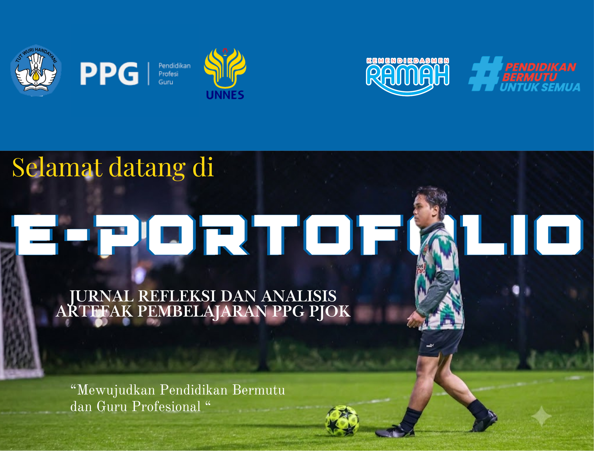

Pengantar Portofolio
Portfolio digital ini disusun sebagai bentuk dokumentasi, refleksi kritis, dan bukti nyata dari proses pembelajaran yang telah saya lalui selama mengikuti program Pendidikan Profesi Guru (PPG) Pendidikan Jasmani, Olahraga, dan Kesehatan di Universitas Negeri Semarang.
Di dalam platform ini, Anda akan menemukan analisis mendalam mengenai artefak pembelajaran dari Siklus 1 hingga Siklus 3, instrumen penilaian autentik, serta refleksi filosofis mengenai model guru masa depan yang ingin saya wujudkan demi kemajuan pendidikan olahraga di Indonesia yang bermutu dan bermartabat.